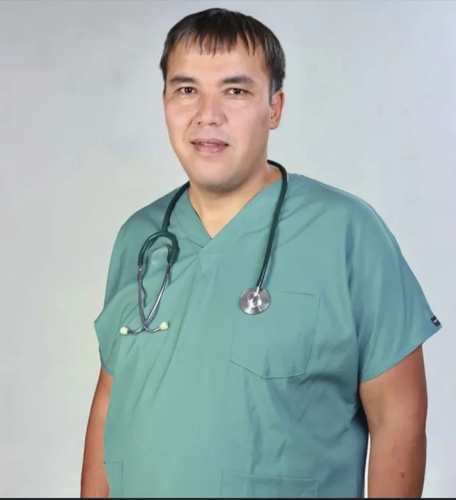
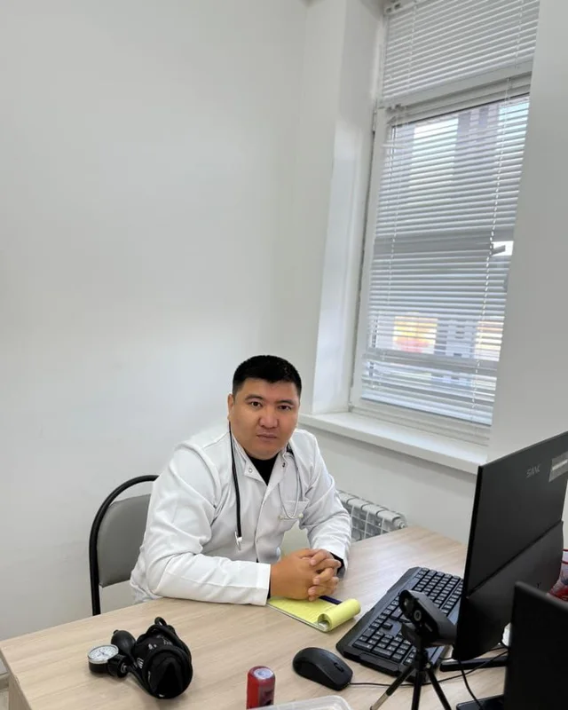

Стаж 17 лет
Стаж 17 летКоманда
Наши врачи
Опытные специалисты с подтверждённой квалификацией
Стаж 17 лет
Стаж 16 лет
Стаж 10 летАнонимно · Без постановки на учёт · Облегчение за 1–2 часа
Врачи с опытом 10+ лет · Работаем 24/7
Нажимая «Вызвать врача», вы соглашаетесь с политикой конфиденциальности
Опытные специалисты с подтверждённой квалификацией
Стаж 17 лет
Стаж 16 лет
Стаж 10 летПростой и понятный процесс получения медицинской помощи
По телефону или на сайте
В течение 2 минут
От 20 до 30 минут
Прибытие, первичный осмотр, назначение лечения
Контроль состояния и корректировка лечения
100% бесплатнаяРеальные истории от наших пациентов
Очень быстро приехал педиатр. Ребёнку 3 года, была высокая температура. Врач все объяснил, назначил лечение. Спасибо!
Вызывали терапевта на дом к пожилой маме. Доктор очень внимательный, все подробно рассказал. Рекомендую!
Отличный сервис! Приехали за 40 минут, врач профессионал. Ребёнку 5 лет стало намного легче после визита.
Скриншоты переписок в WhatsApp
Работаем круглосуточно без выходных. Приезд врача от 30 минут.
Заполните форму — мы свяжемся с вами и подберём врача. Заявка откроется в WhatsApp.
Откройте WhatsApp и отправьте сообщение — администратор ответит в течение пары минут.
Из-за запоя страдают сердце, печень и нервная система. Когда нужно быстро восстановиться перед работой или встречей, важно не рисковать. Самолечение или помощь медсестры без диагностики опасны. Возможны скачки давления, сбои в работе сердца и ухудшение самочувствия. Поэтому эффективнее оценить состояние пациента и поставить капельницу после алкоголя.
Капельница подбирается индивидуально. Она может включать растворы, витамины и препараты для поддержки организма. Универсального состава нет, все зависит от состояния, возраста пациента и длительности запоя.
Когда нужно быстро встать на ноги, важно не просто снять похмелье, а убрать последствия интоксикации. Профессионально прокапать после запоя – значит помочь организму вывести токсины:
Часто люди откладывают помощь, надеясь, что станет легче и похмелье пройдет само. Но интоксикация может усиливаться. В таких случаях капельница после алкоголя помогает восстановиться и снизить риски осложнений. Она помогает быстрее стабилизировать состояние и избежать ухудшения.
Vita Med работает круглосуточно 24/7. Обратиться за медицинской помощью можно в Астане и Алматы.
Наши специалисты выезжают на дом, проводят необходимые процедуры и могут прокапать после запоя. Это врачи высшей категории со средним стажем от 10 лет, с лицензиями и сертификатами.
Обращение полностью анонимно. Мы понимаем деликатность ситуации, поэтому гарантируем конфиденциальность, выезд без лишнего внимания и бережный подход к каждому пациенту.
Бригада может приехать в течение 20–30 минут и сразу начать вывод из запоя Астана и Алматы. Также предусмотрена бесплатная повторная онлайн-консультация для контроля состояния и корректировки терапии. Мы обеспечиваем доступные цены, четкие рекомендации и план лечения для каждого пациента.
Вывод из запоя Астана и Алматы – быстрое и безопасное решение. Пациент получает медицинский подход, анонимность и поддержку на всех этапах. Не стоит ждать ухудшения состояния. Оставьте заявку или свяжитесь с нами прямо сейчас, если нужна помощь и быстрое восстановление. Вы можете ознакомиться с реальными отзывами пациентов, которые уже обращались к нам.